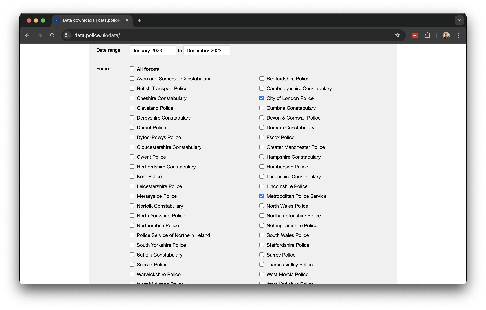
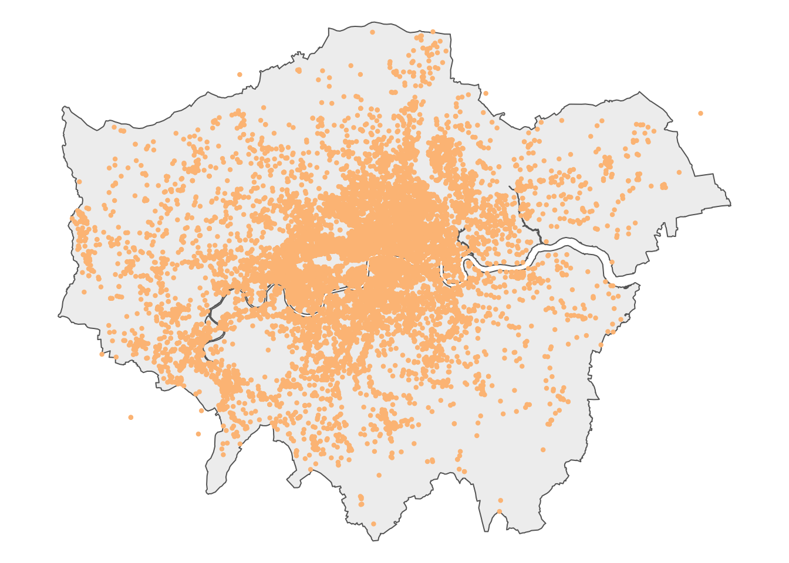

2 Spatial Queries and Geometric Operations
This week, we look at geometric operations and spatial queries: the fundamental building blocks when it comes to spatial data processing and analysis. This includes operations such as aggregating point data, calculating the distances separating one or more spatial objects, running a buffer analysis, and intersecting different spatial layers.
2.1 Lecture slides
You can download the slides of this week’s lecture here: [Link].
2.2 Reading list
Essential readings
- Longley, P. et al. 2015. Geographic Information Science & Systems, Chapter 2: The Nature of Geographic Data, pp. 33-54. [Link]
- Longley, P. et al. 2015. Geographic Information Science & Systems, Chapter 3: Representing Geography, pp. 55-76. [Link]
- Longley, P. et al. 2015. Geographic Information Science & Systems, Chapter 7: Geographic Data Modeling, pp. 152-172. [Link]
- Longley, P. et al. 2015. Geographic Information Science & Systems, Chapter 13: Spatial Data Analysis, pp. 290-318. [Link]
Suggested readings
- Lovelace, R., Nowosad, J. and Muenchow, J. 2021. Geocomputation with R, Chapter 4: Spatial data operations. [Link]
- Lovelace, R., Nowosad, J. and Muenchow, J. 2021. Geocomputation with R, Chapter 5: Geometry operations. [Link]
- Lovelace, R., Nowosad, J. and Muenchow, J. 2021. Geocomputation with R, Chapter 6: Reprojecting geographic data. [Link]
2.3 Bike theft in London I
This week, we will examine to what extent reported bicycle theft in London cluster around train and underground stations. We will be using open data from data.police.uk on reported crimes alongside OpenStreetMap data for this analysis. We will use R to directly download the necessary data from OpenStreetMap, but the crime data will need to be manually downloaded from the data portal. We further have access to a GeoPackage that contains the London 2021 MSOA boundaries that we can use as reference layer. If you do not already have it on your computer, save this file in your data/spatial folder.
| File | Type | Link |
|---|---|---|
| London MSOA 2021 Spatial Boundaries | GeoPackage |
Download |
2.3.1 Crime data
The UK Police Data Portal allows you to access and generate tabular data for crime recorded in the UK across the different police forces. To download recorded crime data for London:
- Navigate to data.police.uk and click on Downloads.
- Under the data range select
January 2023toDecember 2023. - Under the Custom download tab select
Metropolitan Police ServiceandCity of London Police. Leave the other settings unchanged and click on Generate file.
- It may take a few minutes for the download to be generated, so be patient. Once the Download now button appears, you can download the dataset.
- After downloading, unzip the file. You will find that the zip file contains 12 folders, one for each month of 2023. Each folder includes two files: one for the
Metropolitan Police Serviceand one for theCity of London Police. - Create a new folder named
London-Crimewithin yourdata/attributesdirectory, and copy all 12 folders with the data into this new folder.
To get started, let us create our first script. File -> New File -> R Script. Save your script as w02-bike-theft.r.
We will start by loading the libraries that we will need:
R code
# load libraries
library(tidyverse)
library(janitor)
library(sf)
library(tmap)
library(osmdata)You may have to install some of these libraries if you have not used these before.
Although we could read each individual crime file into R one by one and then combine them, we can actually accomplish this in a single step:
R code
# list all csv files
crime_df <- list.files(path = "data/attributes/London-Crime/", full.names = TRUE, recursive = TRUE) |>
# read individual csv files
lapply(read_csv) |>
# bind together into one
bind_rows()
# inspect
head(crime_df)# A tibble: 6 × 12
`Crime ID` Month `Reported by` `Falls within` Longitude Latitude Location
<chr> <chr> <chr> <chr> <dbl> <dbl> <chr>
1 4a14d4745da0a2… 2023… City of Lond… City of Londo… -0.106 51.5 On or n…
2 e6e32581c99c5b… 2023… City of Lond… City of Londo… -0.107 51.5 On or n…
3 7b7cb8e7debe8b… 2023… City of Lond… City of Londo… -0.110 51.5 On or n…
4 f7fc44e1e76332… 2023… City of Lond… City of Londo… -0.108 51.5 On or n…
5 8083dafd1770af… 2023… City of Lond… City of Londo… -0.112 51.5 On or n…
6 4587239a45f0e8… 2023… City of Lond… City of Londo… -0.112 51.5 On or n…
# ℹ 5 more variables: `LSOA code` <chr>, `LSOA name` <chr>, `Crime type` <chr>,
# `Last outcome category` <chr>, Context <lgl>Depending on your computer, processing this data may take some time due to the large volume involved. Once completed, you should have a dataframe containing 1,144,329 observations.
You can further inspect the object using the View() function.
The column names contain spaces and are therefore not easily referenced. We can easily clean this up using the janitor package:
R code
# clean names
crime_df <- crime_df |>
clean_names()
# inspect
names(crime_df) [1] "crime_id" "month" "reported_by"
[4] "falls_within" "longitude" "latitude"
[7] "location" "lsoa_code" "lsoa_name"
[10] "crime_type" "last_outcome_category" "context" If your clean_names() function returns an error, it is likely due to a conflict with another library that also includes a clean_names() function. In such cases, R cannot determine which one to use. To resolve this, you can specify the library explicitly by using janitor::clean_names().
For our analysis, we are currently only interested in reported bicycle thefts, so we need to filter our data based on the crime_type column. We can start by examining the unique values in this column and then subset the data accordingly:
R code
# unique types
unique(crime_df$crime_type) [1] "Other theft" "Other crime"
[3] "Theft from the person" "Public order"
[5] "Anti-social behaviour" "Burglary"
[7] "Criminal damage and arson" "Drugs"
[9] "Shoplifting" "Vehicle crime"
[11] "Violence and sexual offences" "Bicycle theft"
[13] "Robbery" "Possession of weapons" # filter
theft_bike <- crime_df |>
filter(crime_type == "Bicycle theft")
# inspect
head(theft_bike)# A tibble: 6 × 12
crime_id month reported_by falls_within longitude latitude location lsoa_code
<chr> <chr> <chr> <chr> <dbl> <dbl> <chr> <chr>
1 62b0f525… 2023… City of Lo… City of Lon… -0.0916 51.5 On or n… E01000002
2 9a078d63… 2023… City of Lo… City of Lon… -0.0952 51.5 On or n… E01032739
3 f175a32e… 2023… City of Lo… City of Lon… -0.0872 51.5 On or n… E01032739
4 137ec120… 2023… City of Lo… City of Lon… -0.0783 51.5 On or n… E01032739
5 4c3b4677… 2023… City of Lo… City of Lon… -0.108 51.5 On or n… E01032740
6 13b5eb5c… 2023… City of Lo… City of Lon… -0.0980 51.5 On or n… E01032740
# ℹ 4 more variables: lsoa_name <chr>, crime_type <chr>,
# last_outcome_category <chr>, context <lgl>Now that we have filtered the data to only include reported bicycle thefts, we need to convert our dataframe into a spatial dataframe that maps the locations of the crimes using the recorded latitude and longitude coordinates. We can then project this spatial dataframe into the British National Grid (EPSG:27700).
R code
# to spatial data
theft_bike <- theft_bike |>
filter(!is.na(longitude) & !is.na(latitude)) |>
st_as_sf(coords = c("longitude", "latitude"), crs = 4326) |>
st_transform(27700)
# inspect
head(theft_bike)Simple feature collection with 6 features and 10 fields
Geometry type: POINT
Dimension: XY
Bounding box: xmin: 531388 ymin: 180914 xmax: 533447 ymax: 181727.9
Projected CRS: OSGB36 / British National Grid
# A tibble: 6 × 11
crime_id month reported_by falls_within location lsoa_code lsoa_name
<chr> <chr> <chr> <chr> <chr> <chr> <chr>
1 62b0f525fc471c062… 2023… City of Lo… City of Lon… On or n… E01000002 City of …
2 9a078d630cf67c37c… 2023… City of Lo… City of Lon… On or n… E01032739 City of …
3 f175a32ef7f90c67a… 2023… City of Lo… City of Lon… On or n… E01032739 City of …
4 137ec1201fd64b578… 2023… City of Lo… City of Lon… On or n… E01032739 City of …
5 4c3b467755a98afa3… 2023… City of Lo… City of Lon… On or n… E01032740 City of …
6 13b5eb5ca0aef09a2… 2023… City of Lo… City of Lon… On or n… E01032740 City of …
# ℹ 4 more variables: crime_type <chr>, last_outcome_category <chr>,
# context <lgl>, geometry <POINT [m]>Let’s map the dataset to get an idea of how the data looks like, using the outline of London as background:
R code
# read spatial dataset
msoa21 <- st_read("data/spatial/London-MSOA-2021.gpkg")Reading layer `London-MSOA-2021' from data source
`/Users/justinvandijk/Library/CloudStorage/Dropbox/UCL/Web/jtvandijk.github.io/GEOG0030/data/spatial/London-MSOA-2021.gpkg'
using driver `GPKG'
Simple feature collection with 1002 features and 8 fields
Geometry type: MULTIPOLYGON
Dimension: XY
Bounding box: xmin: 503574.2 ymin: 155850.8 xmax: 561956.7 ymax: 200933.6
Projected CRS: OSGB36 / British National Grid# london outline
outline <- msoa21 |>
st_union()
# shape
tm_shape(outline) +
# map data
tm_polygons(
fill = "#f0f0f0",
col = NA
) +
# shape
tm_shape(theft_bike) +
# map data
tm_symbols(
size = 0.10,
fill = "#fdc086",
col = "#fdc086",
) +
# layout
tm_layout(
frame = FALSE,
)
We can save the prepared dataset as a GeoPackage so that we can use it some other time:
R code
# write
st_write(theft_bike, "data/spatial/London-BicycleTheft-2023.gpkg")2.3.2 Station data
OpenStreetMap (OSM) is a free, editable map of the world. Each map element (whether a point, line, or polygon) in OSM is tagged with various attribute data. To download the station data we need, we must use the appropriate tags, represented as key and value pairs, to query the OSM database. In our case, we are looking for train stations, which fall under the Public Transport key, with a value of station. To limit our search to London, we can use the spatial extent of the 2021 MSOA boundaries as the bounding box for data extraction.
R code
# define our bbox coordinates, use WGS84
bbox_london <- msoa21 |>
st_transform(4326) |>
st_bbox()
# osm query
osm_stations <- opq(bbox = bbox_london) |>
add_osm_feature(key = "public_transport", value = "station") |>
osmdata_sf()In some cases, the OSM query may return an error, particularly when multiple users from the same location are executing the exact same query. If so, you can download a prepared copy of the data here: [Download]. You can load this copy into R through load('data/spatial/London-OSM-Stations.RData')
The OSM query returns all data types, including lines and polygons tagged as stations. For our analysis, we only want to retain the point locations. In addition, we want to clip the results to the outline of London to exclude points that fall within the bounding box but outside the boundaries of Greater London.
R code
# extract points
osm_stations <- osm_stations$osm_points |>
st_set_crs(4326) |>
st_transform(27700) |>
st_intersection(outline) |>
select(c("osm_id", "name", "network", "operator", "public_transport", "railway"))Warning: attribute variables are assumed to be spatially constant throughout
all geometries# inspect
head(osm_stations)Simple feature collection with 6 features and 6 fields
Geometry type: POINT
Dimension: XY
Bounding box: xmin: 506148.8 ymin: 168292.6 xmax: 546593.8 ymax: 191714.7
Projected CRS: OSGB36 / British National Grid
osm_id name network
780856 780856 Shepherd's Bush Market London Underground
1256794 1256794 West Drayton National Rail;Elizabeth line
2013971 2013971 Finchley Central London Underground
9780241 9780241 St Mary Cray National Rail
13330343 13330343 Woodford London Underground
13790683 13790683 Mile End London Underground
operator public_transport railway geometry
780856 London Underground station station POINT (523195.9 180061.9)
1256794 Elizabeth line station station POINT (506148.8 180085.4)
2013971 London Underground station station POINT (525294.7 190658)
9780241 Southeastern station station POINT (546593.8 168292.6)
13330343 London Underground stop_position stop POINT (540946.1 191714.7)
13790683 London Underground stop_position stop POINT (536524.6 182545)# inspect
nrow(osm_stations)[1] 4057The total number of data points seems rather high. In fact, looking at the railway variable, several points are not tagged as station or do not have a value at all:
R code
# inspect values
count(osm_stations, railway)Simple feature collection with 5 features and 2 fields
Geometry type: GEOMETRY
Dimension: XY
Bounding box: xmin: 504982.3 ymin: 159027.2 xmax: 556185.7 ymax: 200138.6
Projected CRS: OSGB36 / British National Grid
railway n geometry
1 station 614 MULTIPOINT ((505078.2 17673...
2 stop 17 MULTIPOINT ((528197.7 18571...
3 subway_entrance 38 MULTIPOINT ((525226.4 18745...
4 train_station_entrance 1 POINT (538196.2 184826.5)
5 <NA> 3387 MULTIPOINT ((504982.3 17581...The number of points tagged as station in the railway field are most likely the only points in our dataset that represent actual stations, so we will only retain those points.
R code
# extract train and underground stations
osm_stations <- osm_stations |>
filter(railway == "station")Let’s map the dataset to get an idea of how the data looks like, using the outline of London as background:
R code
# shape
tm_shape(outline) +
# map data
tm_polygons(
fill = "#f0f0f0",
col = NA
) +
# shape
tm_shape(osm_stations) +
# map data
tm_symbols(
size = 0.2,
fill = "#636363",
col = "#636363",
) +
# layout
tm_layout(
frame = FALSE,
)Now we have our data prepared, we can move on to analyse the extent to which bicycle theft in London cluster around stations. We can use both spatial queries and geometric operations to complete this analysis.
When using osmdata to retrieve train stations in London, be aware that OpenStreetMap data may be incomplete or inconsistent due to different tagging practices by contributors, missing or outdated entries, and variations in how stations are classified. While verifying every detail is beyond the scope of this practical, it is essential to exercise due diligence when working with real-world data. Where possible triangulate with other authoritative sources such as official transport datasets and at the very least perform sanity checks to identify obvious anomalies.
2.3.3 Spatial queries
A spatial query is used to retrieve data based on its geographic location or spatial relationships. It uses spatial information from one or more layers to find features that meet specific criteria, such as proximity, intersection, or containment. For instance, we can use a spatial query to count all the bicycle thefts that have occurred within 500 metres of a train or underground station:
R code
# create a single station geometry
osm_stations_comb <- osm_stations |>
st_union()
# spatial query
theft_bike$d500 <- theft_bike |>
st_is_within_distance(osm_stations_comb, dist = 500, sparse = FALSE)
# inspect
head(theft_bike)Simple feature collection with 6 features and 11 fields
Geometry type: POINT
Dimension: XY
Bounding box: xmin: 531388 ymin: 180914 xmax: 533447 ymax: 181727.9
Projected CRS: OSGB36 / British National Grid
# A tibble: 6 × 12
crime_id month reported_by falls_within location lsoa_code lsoa_name
<chr> <chr> <chr> <chr> <chr> <chr> <chr>
1 62b0f525fc471c062… 2023… City of Lo… City of Lon… On or n… E01000002 City of …
2 9a078d630cf67c37c… 2023… City of Lo… City of Lon… On or n… E01032739 City of …
3 f175a32ef7f90c67a… 2023… City of Lo… City of Lon… On or n… E01032739 City of …
4 137ec1201fd64b578… 2023… City of Lo… City of Lon… On or n… E01032739 City of …
5 4c3b467755a98afa3… 2023… City of Lo… City of Lon… On or n… E01032740 City of …
6 13b5eb5ca0aef09a2… 2023… City of Lo… City of Lon… On or n… E01032740 City of …
# ℹ 5 more variables: crime_type <chr>, last_outcome_category <chr>,
# context <lgl>, geometry <POINT [m]>, d500 <lgl[,1]>The above code converts the stations dataframe into a single geometry. This step is essential for sf to ensure that each point in the dataset is compared to every point in the stations dataframe. Without this conversion, the comparison would be done one station point at a time, storing only the last result rather than considering all station points simultaneously.
We can use the count() function to find out just how many thefts fall in each of these categories:
R code
# number of bicycle thefts within 500m of a station
count(theft_bike, d500)Simple feature collection with 2 features and 2 fields
Geometry type: MULTIPOINT
Dimension: XY
Bounding box: xmin: 384131 ymin: 101512 xmax: 612925 ymax: 398061.1
Projected CRS: OSGB36 / British National Grid
# A tibble: 2 × 3
d500[,1] n geometry
* <lgl> <int> <MULTIPOINT [m]>
1 FALSE 5492 ((384131 398061.1), (409823 101512), (494953 212260), (495917 …
2 TRUE 10527 ((505376 184282.9), (505424 184212), (505433 184416), (505558 …More than two-thirds of all reported bicycle thefts in London occur within 500 metres of a train or underground station. Of course, we can map the results for a visual inspection:
R code
# classify distances
theft_bike <- theft_bike |>
mutate(dist_class = if_else(d500 == TRUE, "> 500 m", "< 500 m")) |>
mutate(dist_class = factor(dist_class, levels = c("> 500 m", "< 500 m")))
# shape
tm_shape(outline) +
# map data
tm_polygons(
fill = "#f0f0f0",
col = NA
) +
# shape
tm_shape(theft_bike) +
# map data
tm_symbols(
# map data
col = "dist_class",
size = 0.1,
col.scale = tm_scale_categorical(
values = c(
"> 500 m" = "#fdc086",
"< 500 m" = "#998ec3"
),
),
# legend
col.legend = tm_legend(
title = "",
frame = FALSE,
)
) +
# shape
tm_shape(osm_stations) +
# map data
tm_symbols(
size = 0.2,
fill = "#636363",
col = "#636363",
) +
# legend
tm_add_legend(
type = "symbols",
labels = "Station",
size = 0.2,
fill = "#636363"
) +
# layout
tm_layout(
# legend
legend.outside = FALSE,
legend.position = c(0.0, 0.2),
legend.text.size = 0.8,
# canvas
frame = FALSE
)2.3.4 Geometric operations
Geometric operations are used to manipulate and analyse the shapes and spatial properties of geometric objects, such as points, lines, and polygons. These operations include tasks like calculating intersections, buffering, and determining the distance between shapes. In this case, we can create 500-metre buffers around each station and then count how many bicycle thefts fall within these buffers.
R code
# buffer
osm_stations_buffer <- osm_stations |>
st_buffer(dist = 500) |>
st_union()
# inspect
head(osm_stations_buffer)Geometry set for 1 feature
Geometry type: MULTIPOLYGON
Dimension: XY
Bounding box: xmin: 504578.2 ymin: 158527.2 xmax: 556685.7 ymax: 200638.6
Projected CRS: OSGB36 / British National GridMULTIPOLYGON (((517709.6 169311.1, 517686.6 169...When performing buffer analysis, the buffer sizes are determined by the units of the coordinate reference system (CRS) used. For instance, with the British National Grid, where the CRS is in metres, the buffer distance must be specified in metres.
We can map the results for a visual inspection:
R code
# shape
tm_shape(outline) +
# map data
tm_polygons(
fill = "#f0f0f0",
col = NA
) +
# shape
tm_shape(osm_stations_buffer) +
# specify colours
tm_polygons(
fill = "#beaed4",
) +
# layout
tm_layout(
# canvas
frame = FALSE
)
We can now use the st_intersects function to find out which reported bicycle thefts have occurred within 500 metres of a train or underground station.
R code
# intersect buffer with bicycle thefts
theft_bike$d500_buffer <- theft_bike |>
st_intersects(osm_stations_buffer, sparse = FALSE)
# number of bicycle thefts within 500m of a station
count(theft_bike, d500_buffer)Simple feature collection with 2 features and 2 fields
Geometry type: MULTIPOINT
Dimension: XY
Bounding box: xmin: 384131 ymin: 101512 xmax: 612925 ymax: 398061.1
Projected CRS: OSGB36 / British National Grid
# A tibble: 2 × 3
d500_buffer[,1] n geometry
* <lgl> <int> <MULTIPOINT [m]>
1 FALSE 5498 ((384131 398061.1), (409823 101512), (494953 212260), (…
2 TRUE 10521 ((505376 184282.9), (505424 184212), (505433 184416), (…The results are almost identical, with a small difference due to how the two methods define within and handle spatial relationships and boundaries. For instance, a point on the buffer’s edge will be included in the intersect method, but may not meet the distance threshold required by st_within_distance().
2.4 Assignment
Now that we are familiar with basic spatial queries and geometric operations, we can conduct a similar analysis on the number of serious and fatal road crashed in London in 2022 and determine how many occurred on or near a main road. Try to do the following:
- Download the two datasets provided below and save them in the appropriate subfolder within your
datadirectory. The datasets include:- A
csvfile containing the number of road crashes that occurred in London in 2022, extracted from the UK’s official road traffic casualty database using the stats19 R library. - A
GeoPackagefile that contains main roads in London, extracted from the Ordnance Survey Open Roads dataset.
- A
- Calculate the number of serious and fatal road crashes that occurred within 100 metres and 500 metres of a main road.
| File | Type | Link |
|---|---|---|
| London STATS19 Road Collisions 2022 | csv |
Download |
| London OS Open Roads - Main Roads | GeoPackage |
Download |
2.5 Before you leave
Boom. That is how you can conduct basic spatial queries and geometric operations and using R and sf. Yet more RGIS coming over the next couple of weeks, but this concludes the tutorial for this week. Time to check out that reading list?